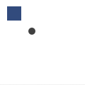

color
color(r, g, b, a=1.0)
color(h, s, b, a=1.0)
color(c, m, y, k, a=1.0)
color(k, a=1.0)
Returns a color. The color is either specified in terms of RGB, HSB, or CMYK depending on the current colormode(). The default colormode is RGB. Each RGB, HSB, or CMYK parameter ranges between 0.0 and 1.0. The last parameter is optional and sets the alpha (opacity) value. Additionally, color() can be called with just one parameter that sets the gray value. The returned color can be supplied as parameter to the fill() or stroke() command.
 |
c1 = color(0.2, 0.3, 0.5)
fill(c1)
rect(10, 10, 20, 20)
c2 = color(0.3)
fill(c2)
oval(40, 40, 10, 10) |